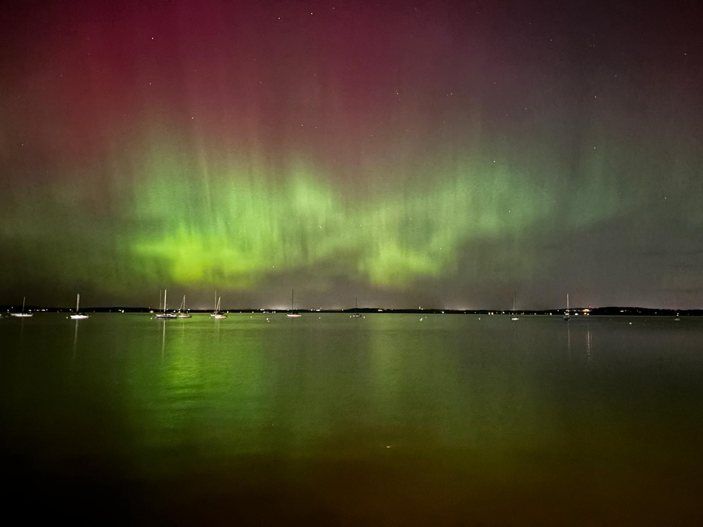
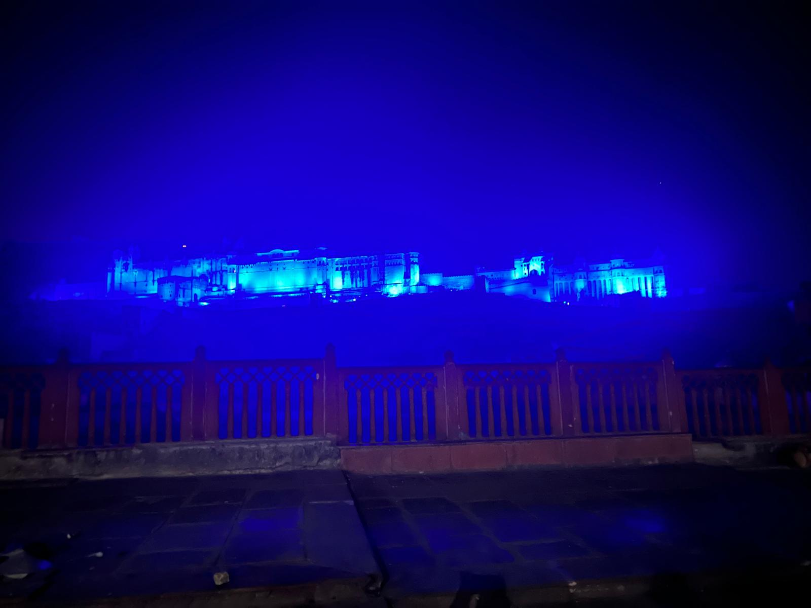

Moments & Verses
Oh this might get a little philosophical lol — call me an old soul, but I find peace in nature, night, moon, sunsets, breezes, books, poetry, the smell of rain, flowers, and people who feel like a hug.
“I write because it makes me feel like someone’s listening — or am I finally listening to myself?”
“A hopeful heart is a home for miracles.”
“There’s no right time — just time, and what you do with it.”
“There’s a saying in Tibet: if a problem can be solved, there’s no use worrying about it; if it can’t be solved, worrying will do no good.”
“You are the series of mistakes that had to happen for you to find you.” — Atticus

the sun left quietly..so the moon could try again

neon signs hum..the same tune as my heartbeat